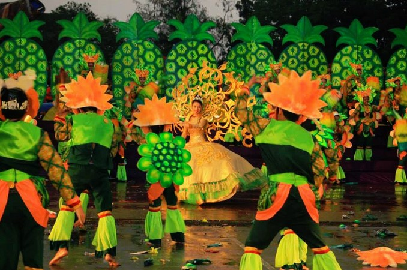

Loading...
Bantayog Festival
Daet, Camarines Norte
Bantayog Festival hots its name from Unang Bantyog in Jose Rizal, the first ever Rizal Monument not only in the Philippines but in the world. It was built in Camarines Norte in 1898 as an homage to our national hero to our national hero two years after his martyrdom. This festival is a convocation of all the festivals of the province that depict the culture, history, arts, and traditions as well as the tourism potential of various municipalities. Bantayog Festival also coincides with the founding anniversary of Camarines Norte every April 15th.
Boyuboy Festival
San Lorenzo Ruiz, Camarines Norte
Boyuboy is a celebration promoting the abundantly growing Queen Formosa Pineapple. It is celebrated every September 26 during the feast of St.Lorenzo Ruiz.” Boyuboy” which means “pagkakabugkos” in Bikol is a symbolism of unity and cohesiveness, a character displayed by people during harvest season.

Busig-on Festival
Labo, Camarines Norte
The festival embodies the rich culture, history, and art of the townsfolk of Labo. It is named After the longest river in the province that links the lush forests of Mt. Labo National Park and the Pacific Ocean. “Busig” means plenty. It is celebrated every September 8 and is often jam-packed with crowd-drawing activities
Kadagatan Festival
Mercedes, Camarines Norte
Kadagatan Festival manifests Mercedes’rich marine resources and is a joyous supplication for the continued prosperity of the town’s fishermen. The festival recognizes Mother Nature for its gift of vast fishing resources, magnificent shorelines, and other aquatic potentials. It is celebrated every August.

Mambulawan Festival
Jose Panganiban, Camarines Norte
Mambulawan Festival (Dance for Gold) is held every October 7 to coincide with the feast of Our Lady of the Most Holy Rosary. The name Mambulawan Festival is derived from the word “mambulao” which means a place that is rich and bountiful in gold.

Mananap Festival
San Vicente, Camarines Norte
The festival honors the majestic Mananap Falls and the folklore behind the Abasig-Matogdon-Mananap Forest Reserve Biotic Area. The town promotes Eco-Tourism and Farm Tourism that happen around these areas. It is celebrated every last Friday of April in honor of St.Vincent Ferrer.

Pabirik Festival
Paracale, Camarines Norte
Pabirik is an essential tool used by miners in Paracale. It is usually made of a strong circular piece of wood. This marks the symbol for the celebration and festivities of the town of gold every February 2. This also coincides with the feast of the Nuestra Senora de Candelaria, the immaculate patron saint of Paracale.
Padayog Festival
Sta. Elena, Camarines Norte
The town of Sta. Elena takes pride in the people’s three main sources of living: palay,isda, and niyog. This is the foundation of the Padayog Festival every June 7.
Palong Festival
Capalonga, Camarines Norte
The festival is an expression of local folk’s gratitude for their town’s name. The etymology of Capalonga is said to be from “Palong”, said to derive from the abundance of an ornamental plant called “Palong Manok” or rooster comb flower. “Capalonga” eventually became Capalonga. The festival is held during the celebration of their Black Nazarene’s Feast Day on May 13.
Paruyan Festival
Talisay, Camarines Norte
Talisay’s annual celebration of a bountiful harvest of palay is held every October 4. Palay is the main source of livelihood in the town. The paruyan Festival traditionally features the festival of its benefactor St. Francis of Assisi. The celebration highlights people’s thanksgiving for the good harvest and the climate that made rice planting and harvesting possible.

Pinyasan Festival
Daet, Camarines Norte
Pinyasan Festival is the flagship event of Daet, the provincial capital of Camarines Norte. It showcases the sweetest variety of pineapple in the country- the Queen Formosa. The event boosts tourism and pineapple production in the province. The festival started on April 14, 1993 under executive order 07-93. The Pinyasan Festival is one of the grandest celebrations in Ddaet and is held every June 24.

Rahugan Festival
Basud, Camarines Norte
Rahugan originates from the Bicol word”rahug”, which means a bundle of coconut, which unique symbol of unity and cooperation. This celebration is a way to give thanks for the abundant blessing of coconut products in the locality and to honor St. Raphael the Archangel every October 4.

Tacboan Festival
Vinzons, Camarines Norte
Tacboan Festival is a festival that celebrates the birth of Wenceslao Q. Vinzons, a martyr during World War II. It is held every September 28. Tacboan is the very first name of the town of Vinzons. It has its roots in “Takbohan” the center of the barter trade during the Spanish times and the main port of its fleets in the Province of Ambos Camarines. The festival showcases the rich culture and heritage of the town of Vinzons.